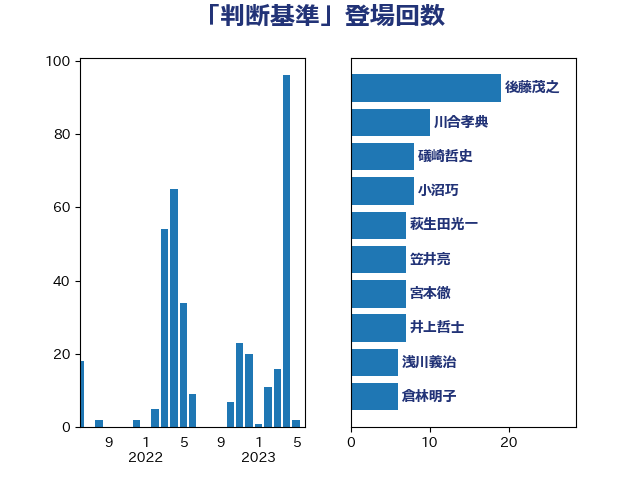

単語「判断基準」

| 後藤茂之 | 自由民主党 | 19 回 |
| 川合孝典 | 国民民主党 | 10 回 |
| 礒崎哲史 | 国民民主党 | 8 回 |
| 小沼巧 | 立憲民主党 | 8 回 |
| 萩生田光一 | 自由民主党 | 7 回 |
| 笠井亮 | 日本共産党 | 7 回 |
| 宮本徹 | 日本共産党 | 7 回 |
| 井上哲士 | 日本共産党 | 7 回 |
| 浅川義治 | 日本維新の会 | 6 回 |
| 倉林明子 | 日本共産党 | 6 回 |
| 青柳仁士 | 日本維新の会 | 5 回 |
| 福山哲郎 | 立憲民主党 | 5 回 |
| 櫻井周 | 立憲民主党 | 5 回 |
| 杉尾秀哉 | 立憲民主党 | 5 回 |
| 塩村あやか | 立憲民主党 | 5 回 |
| 塩川鉄也 | 日本共産党 | 5 回 |
| 仁比聡平 | 日本共産党 | 5 回 |
| 吉川沙織 | 立憲民主党 | 4 回 |
| 加藤勝信 | 自由民主党 | 4 回 |
| 篠原豪 | 立憲民主党 | 3 回 |
| 空本誠喜 | 日本維新の会 | 3 回 |
| 石垣のりこ | 立憲民主党 | 3 回 |
| 田村貴昭 | 日本共産党 | 3 回 |
| 田村まみ | 国民民主党 | 3 回 |
| 沢田良 | 日本維新の会 | 3 回 |
| 本庄知史 | 立憲民主党 | 3 回 |
| 平林晃 | 公明党 | 3 回 |
| 川田龍平 | 立憲民主党 | 3 回 |
| 山井和則 | 立憲民主党 | 3 回 |
| 室井邦彦 | 日本維新の会 | 3 回 |
| 大塚耕平 | 国民民主党 | 3 回 |
| 高橋英明 | 日本維新の会 | 2 回 |
| 鈴木庸介 | 立憲民主党 | 2 回 |
| 谷合正明 | 公明党 | 2 回 |
| 西岡秀子 | 国民民主党 | 2 回 |
| 藤岡隆雄 | 立憲民主党 | 2 回 |
| 畦元将吾 | 自由民主党 | 2 回 |
| 田中健 | 国民民主党 | 2 回 |
| 牧山ひろえ | 立憲民主党 | 2 回 |
| 浜口誠 | 国民民主党 | 2 回 |
| 横沢高徳 | 立憲民主党 | 2 回 |
| 森本真治 | 立憲民主党 | 2 回 |
| 柳ヶ瀬裕文 | 日本維新の会 | 2 回 |
| 松本尚 | 自由民主党 | 2 回 |
| 本村伸子 | 日本共産党 | 2 回 |
| 平木大作 | 公明党 | 2 回 |
| 岩渕友 | 日本共産党 | 2 回 |
| 山口壯 | 自由民主党 | 2 回 |
| 山下芳生 | 日本共産党 | 2 回 |
| 小林鷹之 | 自由民主党 | 2 回 |
| 小宮山泰子 | 立憲民主党 | 2 回 |
| 宮本岳志 | 日本共産党 | 2 回 |
| 吉田統彦 | 立憲民主党 | 2 回 |
| 前川清成 | 日本維新の会 | 2 回 |
| 住吉寛紀 | 日本維新の会 | 2 回 |
| 伊東信久 | 日本維新の会 | 2 回 |
| 三浦信祐 | 公明党 | 2 回 |
| 音喜多駿 | 日本維新の会 | 1 回 |
| 青木愛 | 立憲民主党 | 1 回 |
| 青山大人 | 立憲民主党 | 1 回 |
| 階猛 | 立憲民主党 | 1 回 |
| 長友慎治 | 国民民主党 | 1 回 |
| 鈴木義弘 | 国民民主党 | 1 回 |
| 鈴木敦 | 国民民主党 | 1 回 |
| 金村龍那 | 日本維新の会 | 1 回 |
| 野田聖子 | 自由民主党 | 1 回 |
| 野村哲郎 | 自由民主党 | 1 回 |
| 角田秀穂 | 公明党 | 1 回 |
| 西村明宏 | 自由民主党 | 1 回 |
| 西村康稔 | 自由民主党 | 1 回 |
| 葉梨康弘 | 自由民主党 | 1 回 |
| 羽田次郎 | 立憲民主党 | 1 回 |
| 米山隆一 | 立憲民主党 | 1 回 |
| 神津たけし | 立憲民主党 | 1 回 |
| 石橋林太郎 | 自由民主党 | 1 回 |
| 盛山正仁 | 自由民主党 | 1 回 |
| 田村智子 | 日本共産党 | 1 回 |
| 玉木雄一郎 | 国民民主党 | 1 回 |
| 玄葉光一郎 | 立憲民主党 | 1 回 |
| 熊谷裕人 | 立憲民主党 | 1 回 |
| 漆間譲司 | 日本維新の会 | 1 回 |
| 湯原俊二 | 立憲民主党 | 1 回 |
| 清水貴之 | 日本維新の会 | 1 回 |
| 浜田聡 | NHK党 | 1 回 |
| 浅野哲 | 国民民主党 | 1 回 |
| 浅田均 | 日本維新の会 | 1 回 |
| 河野太郎 | 自由民主党 | 1 回 |
| 江島潔 | 自由民主党 | 1 回 |
| 水岡俊一 | 立憲民主党 | 1 回 |
| 梅村聡 | 日本維新の会 | 1 回 |
| 柚木道義 | 立憲民主党 | 1 回 |
| 松野博一 | 自由民主党 | 1 回 |
| 杉久武 | 公明党 | 1 回 |
| 末次精一 | 立憲民主党 | 1 回 |
| 早稲田ゆき | 立憲民主党 | 1 回 |
| 日下正喜 | 公明党 | 1 回 |
| 斎藤嘉隆 | 立憲民主党 | 1 回 |
| 打越さく良 | 立憲民主党 | 1 回 |
| 山添拓 | 日本共産党 | 1 回 |
| 山崎正恭 | 公明党 | 1 回 |
| 山下貴司 | 自由民主党 | 1 回 |
| 寺田稔 | 自由民主党 | 1 回 |
| 宮崎政久 | 自由民主党 | 1 回 |
| 安江伸夫 | 公明党 | 1 回 |
| 奥下剛光 | 日本維新の会 | 1 回 |
| 天畠大輔 | れいわ新選組 | 1 回 |
| 塩田博昭 | 公明党 | 1 回 |
| 吉田久美子 | 公明党 | 1 回 |
| 吉田とも代 | 日本維新の会 | 1 回 |
| 古川禎久 | 自由民主党 | 1 回 |
| 古川俊治 | 自由民主党 | 1 回 |
| 友納理緒 | 自由民主党 | 1 回 |
| 北神圭朗 | 無所属 | 1 回 |
| 加藤明良 | 自由民主党 | 1 回 |
| 佐藤英道 | 公明党 | 1 回 |
| 伴野豊 | 立憲民主党 | 1 回 |
| 伊藤孝恵 | 国民民主党 | 1 回 |
| 伊波洋一 | 無所属 | 1 回 |
| 串田誠一 | 日本維新の会 | 1 回 |
| 一谷勇一郎 | 日本維新の会 | 1 回 |